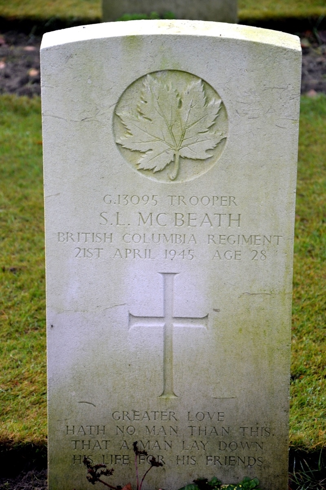
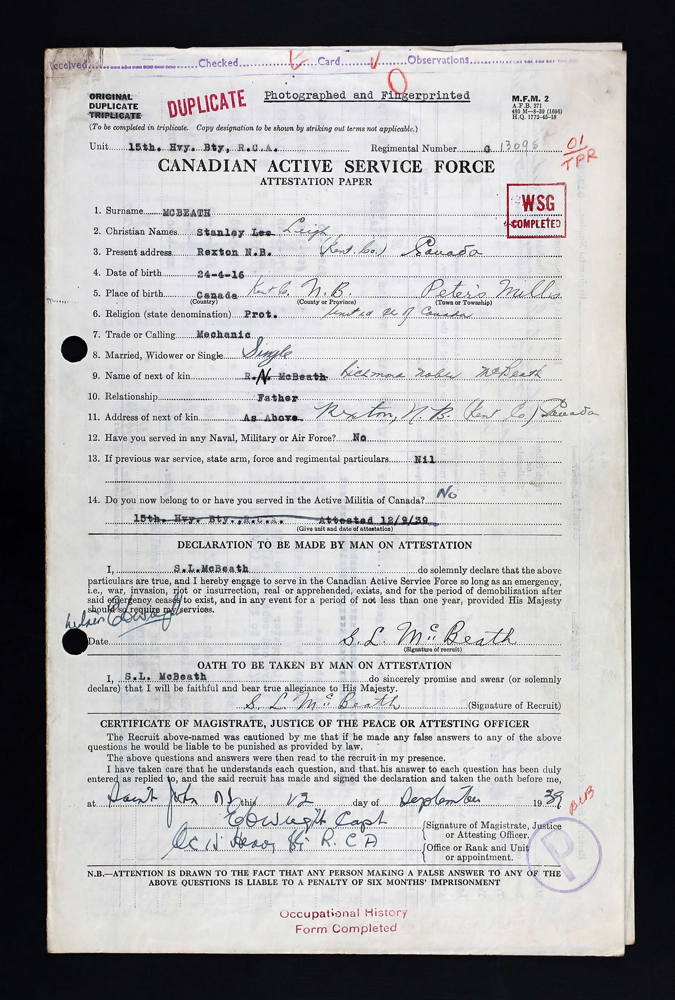
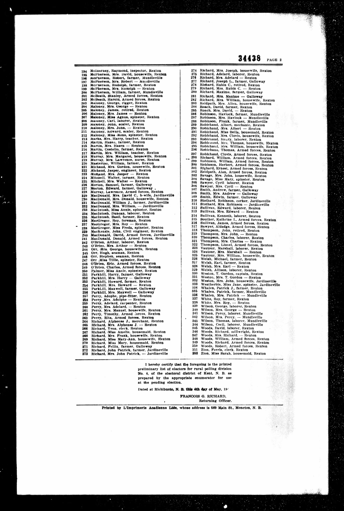

Stanley Leigh McBeath 1916 - 1945
[ Home ] | [ Calendar ] | [ Surnames Index ] | [ Family History ]A mechanic and the older of 2 children of Richmond McBeath and Lilly Peters, Stanley Mcbeath, the fourth cousin once-removed on the father's side of <a href="I1.html">Nigel Horne</a>, was born in Peters Mills, Kent, New Brunswick, Canada on Apr 24, 1916<span class="citation">1,2</span>.</p><p>Throughout his life, he lived in Richibucto, Kent, New Brunswick, Canada on Jun 1, 1921<span class="citation">1</span>; and in Rexton, New Brunswick in 1945<span class="citation">8</span>. He was serving in the military from Sep 12, 1939 to Apr 21, 1945 (<em>regiment: British Columbia Regiment, R.C.A.C. Rank: Trooper; Service number: G/13095</em>). <p>He died on Apr 21, 1945 in The Netherlands<span class="citation">2,3,4,5,6,7</span> and was buried at Holten Canadian War Cemetery, Holten, Zwartewaterland Municipality, Overijssel, Netherlands after Apr 21, 1945<span class="citation">2,4,5</span>.
Parents
- Richmond Noble was born on Dec 3, 1878
- Lilly Victoria was born on Oct 1, 1886
Citations
- 1921 Census of Canada Ancestry.com Operations Inc (Marital Status: CélibataireRelation to Head of House: Fils)
- Canada, Find A Grave Index, 1600s-Current Ancestry.com Operations, Inc.
- Commonwealth War Graves Commission Debt Of Honour - Findmypast
- Global, Find A Grave Index for Non-Burials, Burials at Sea, and other Select Burial Locations, 1300s-Current Ancestry.com Operations, Inc.
- Web: International, Find A Grave Index Ancestry.com Operations, Inc.
- <a href="https://www.veterans.gc.ca/eng/remembrance/memorials/canadian-virtual-war-memorial/detail/2227563?Stanley%20Leigh%20McBeath">https://www.veterans.gc.ca/eng/remembrance/memorials/canadian-virtual-war-memorial/detail/2227563?Stanley%20Leigh%20McBeath</a>
- World War 2 Allies Collection - Findmypast
- Canada, Voters Lists, 1935-1980 Ancestry.com Operations, Inc.
Media
Stanley McBeath - gravestone

Stanley McBeath Army

1945 Electoral Register

Commonwealth War Graves Commission Debt Of Honour - GBM/CWGC/ROLLOFHONOUR/001489735
World War 2 Allies Collection - WW2/07014778
Family Tree

Generated by Ged2Site. Last updated on Jul 20, 2025